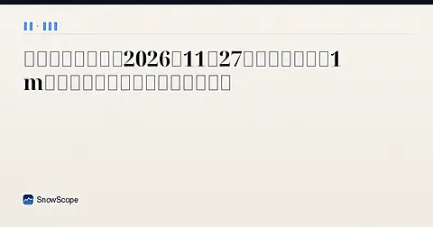

雪情報
Daily snow reports for skiers: where the snow is, what is coming and where to ski, from the SnowScope snow map and measuring stations. Every number comes from that day's data.
2026年11月27日（金曜日）

日本 · 11月27日北海道の雪情報（2026年11月27日）：キロロは1 m超、ニセコとルスツはまだ少なめ
今日の上部ゲレンデの積雪はキロロ119 cm、札幌国際103 cm、旭岳61 cm、ニセコ31 cm、富良野29 cm、ルスツ16 cm。今後8日間の新雪は少なめです。
日本 · 11月27日今週末、北アルプスに大雪：雨のあと白馬・栂池・妙高に約60 cm（2026年11月28日〜30日）
11月28日と29日、低気圧が本州中部を通過します。土曜は雨、その後は雪に。上部ゲレンデの新雪は白馬八方尾根で約62 cm、栂池高原で61 cm、妙高杉ノ原で57 cmの見込みです。
2026年11月19日（木曜日）